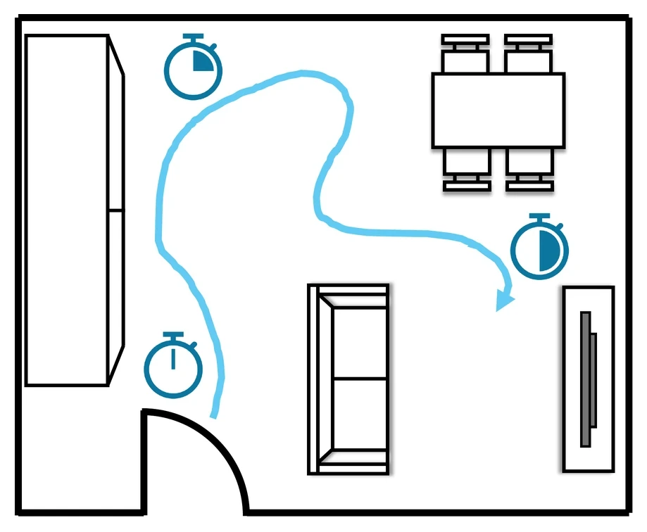
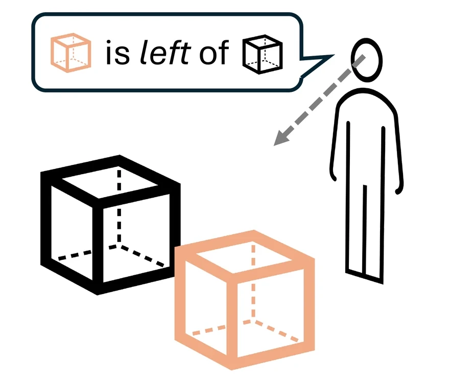
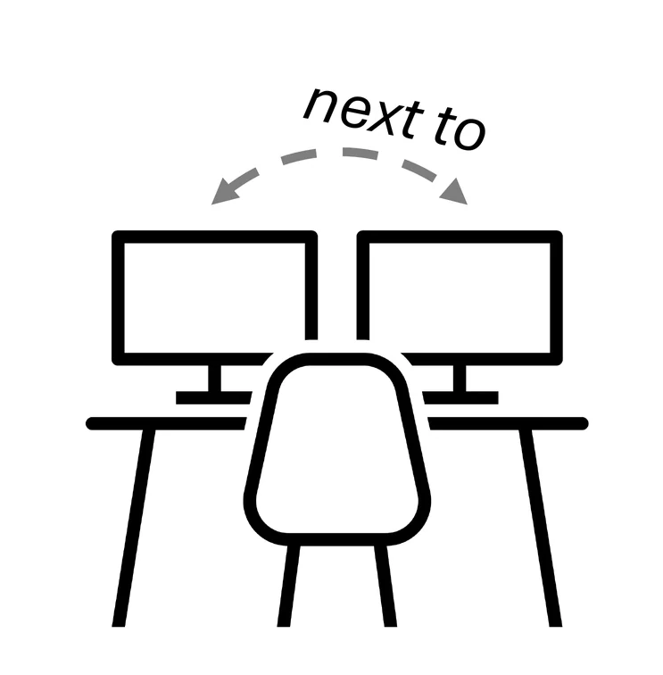
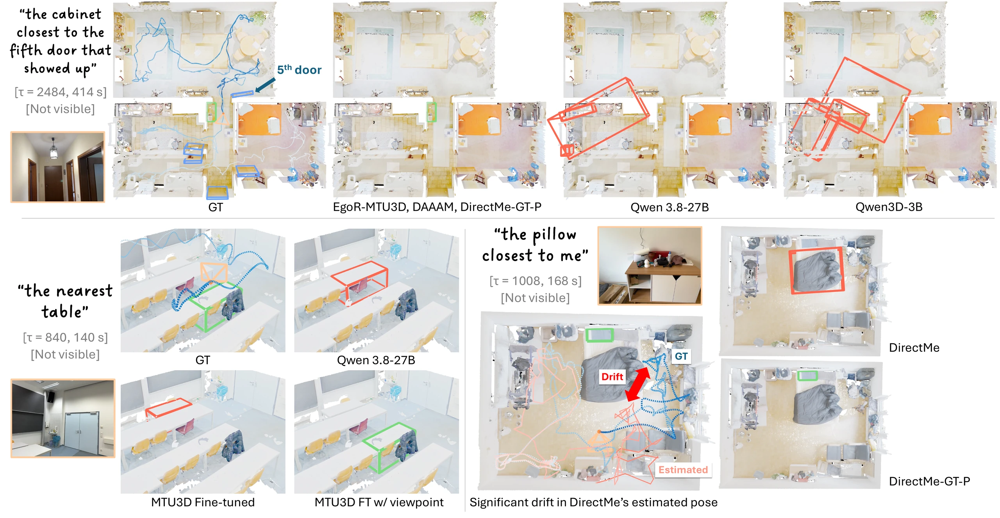
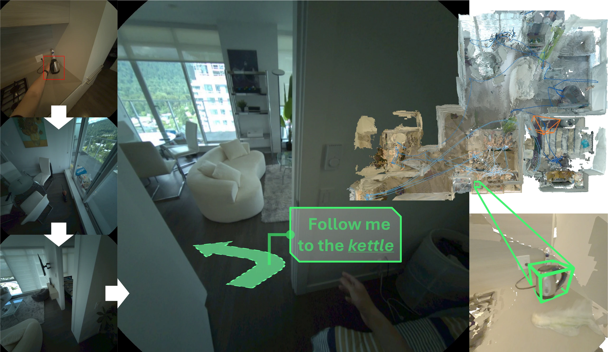

Observation history
When and how objects were encountered: their order and recency.
Example query in the dataset
the earliest heater
first_seen(heater)
3D Visual Grounding from Streaming Egocentric Observations
Abstract
We introduce streaming egocentric 3D visual grounding, where an agent resolves referring expressions using only the partial observation history available at query time. Unlike conventional 3DVG, which assumes a complete scene representation, queries may depend on when and how objects were encountered as well as their spatial relationships.
We present EgoRecall, the first benchmark for this task, comprising 2.25M timestamped queries generated by a compositional DSL over observation history, egocentric relationships, and allocentric structure. Queries are defined with respect to the observations available at their timestamps and may refer to either currently visible or previously observed objects, requiring persistent scene memory.
We evaluate VLM-, 3D-, and memory-based methods under protocols that separate perception from grounding. The task is challenging with our strongest system achieving only 14.1 F1. Our experiments show that modeling observation history and camera-relative relationships improves performance, but targets no longer visible remain particularly challenging.
Consider a user wearing smart glasses who walks through an unfamiliar office and then asks for “the cabinet to the right of the first sink I encountered”. The assistant must find that cabinet in 3D from the video so far, although both objects may have left the view long ago. We tackle this streaming egocentric setting, where such references draw on three axes.

When and how objects were encountered: their order and recency.
Example query in the dataset
the earliest heater
first_seen(heater)

Relations to the observer: what is in view, how far, and which side.
Example query in the dataset
the cabinet closest to me
nearest_to_cam(cabinet)

Relations among objects that do not depend on the viewpoint.
Example query in the dataset
the paper roll nearest to the first shoes that appeared
nearest(first_seen(shoes), paper roll)
The example queries are from test scene 61adeff7d5 (queries 10551, 9128, and 10456); click one to open it in the scene explorer below.
Queries are generated by executable programs over what the camera has seen, so every answer is exact at the moment it is asked. Most queries refer to objects that are no longer in view.
Each ScanNet++ capture is replayed at 6 FPS. At every camera pose, the annotated mesh is rendered and checked against the sensor depth to record which objects are visible.
A query is a program over 22 operators, nested up to two levels. Running it at a frame uses only the objects seen by then, which gives its exact targets.
Along each video, programs run every 2 s and are turned into text with templates. The 9.9M generated queries are then balanced across scenes, operator families, and target visibility into the final set of 2.25M queries.
left_of(first_seen(box), floor mat)
“the floor mat to the left of the earliest boxes”
Are the targets in view when the query is asked?
80% of queries have a target outside the view. When no target is in view, 46% of queries include one last seen more than 10 s earlier, and 15% one last seen more than a minute earlier. The dataset is balanced to these six groups by design.
Which reference axes a query uses
48% of queries combine two axes, and 82% compose two or more operators. Queries have 1.6 targets on average, and 42% refer to more than one object. Queries with no axis name the only object of a category, alone or in a set.
The 60 most frequent target categories, of 1,366
Splits and evaluation stages
| Split | Scenes | Video | Objects | Queries | Stages |
|---|---|---|---|---|---|
| Train | 100 | 6.4 h | 11,582 | 1,202,906 | – |
| Validation | 13 | 0.8 h | 1,616 | 165,340 | 83 |
| Test | 70 | 4.8 h | 8,133 | 879,994 | 440 |
Scenes do not overlap across splits. Validation and test queries are divided into stages of 2,000, drawn so that stages 1 to k always form a proportional random sample; the paper evaluates test stages 1–5 (10,000 queries). See the dataset card for more details.
Replay a test scene and pick a query to see what it refers to and how each method answered.
Loading the scene…
Featured queries
Test scene 61adeff7d5 from ScanNet++. Drag to rotate the view and scroll to zoom.
We adapt five methods from four families and evaluate them on 10,000 test queries. Each query is answered only from the frames up to its query time.
VLM pointing
Qwen 3.8-27B
Chooses a frame among up to 64 RGB frames and points at each target.
Memory-free 3D grounding
Qwen3D-3B
Rebuilds a point cloud from up to 128 RGB-D frames for every query.
Scene-graph memory
DAAAM, DirectMe
Build a scene graph as frames arrive; a VLM selects its nodes.
Object-centric memory
MTU3D, EgoR-MTU3D
Keeps a memory bank of objects; EgoR-MTU3D adds history, recency, and viewpoint encoders.
The best system, EgoR-MTU3D, reaches only 14.1 F1 on the full task.
F1 drops when every target has left the view before the query is asked.
DirectMe builds its scene graph from its own estimates of camera pose and depth. Replacing them with ground-truth poses and sensor depth raises both its coverage, the share of queries with a target among its candidates, and its F1.
| DirectMe with | Coverage | Full F1 |
|---|---|---|
| Estimated pose and depth | 31.4% | 0.5 |
| Ground-truth pose | 62.6% | 6.7 |
| Ground-truth pose and sensor depth | 73.0% | 8.7 |
EgoR-MTU3D adds three encoders to MTU3D's object memory: history (when an object was first seen and how often), recency (whether it is in view and when it was last seen), and viewpoint (its direction and distance from the camera). Each raises selection F1, and all three together raise it most.
| Method | Pose / depth | Coverage | Selection F1 | Full F1 | Top-1 | temp5,203 | vis2,031 | id1,544 | egoD2,853 | egoZ1,889 | lat1,364 | prox752 | sup1,868 | set2,347 |
|---|---|---|---|---|---|---|---|---|---|---|---|---|---|---|
| VLM pointing | ||||||||||||||
| Qwen 3.8-27B† | – / – | 99.1 | 12.2 | 12.1 | 13.2 | 11.8 | 16.4 | 17.4 | 11.0 | 11.1 | 7.9 | 13.6 | 9.2 | 18.8 |
| Memory-free 3D grounding | ||||||||||||||
| Qwen3D-3B | GT / sensor | 95.9 | 10.0 | 9.6 | 12.0 | 9.0 | 11.1 | 12.0 | 10.2 | 11.5 | 9.2 | 13.0 | 8.1 | 10.3 |
| Scene-graph memory | ||||||||||||||
| DAAAM | GT / sensor | 77.7 | 10.4 | 7.9 | 11.6 | 9.6 | 11.4 | 13.0 | 10.8 | 11.9 | 6.9 | 11.9 | 9.0 | 11.3 |
| DirectMe | est. / est. | 31.4 | 1.7 | 0.5 | 0.7 | 1.7 | 2.3 | 1.3 | 1.3 | 1.4 | 1.6 | 2.7 | 2.2 | 1.5 |
| DirectMe-GT-P | GT / est. | 62.6 | 11.5 | 6.7 | 8.4 | 10.0 | 14.6 | 14.4 | 11.3 | 11.4 | 8.6 | 9.7 | 9.4 | 13.0 |
| DirectMe-GT-PD | GT / sensor | 73.0 | 12.7 | 8.7 | 10.9 | 11.1 | 15.2 | 15.3 | 13.5 | 11.7 | 10.2 | 14.0 | 8.0 | 14.9 |
| Object-centric memory | ||||||||||||||
| MTU3D zero-shot | GT / sensor | 68.3 | 2.8 | 1.8 | 10.2 | 2.1 | 2.9 | 4.6 | 2.1 | 2.1 | 1.6 | 2.2 | 2.1 | 2.2 |
| MTU3D fine-tuned | GT / sensor | 68.3 | 15.9 | 10.1 | 17.9 | 14.4 | 19.2 | 22.6 | 15.7 | 16.9 | 12.2 | 15.6 | 10.6 | 20.6 |
| + history encoder | GT / sensor | 68.3 | 17.8 | 11.3 | 18.1 | 16.3 | 21.4 | 24.5 | 17.7 | 19.8 | 13.0 | 15.8 | 11.8 | 22.4 |
| + recency encoder | GT / sensor | 68.3 | 18.0 | 11.5 | 18.9 | 16.2 | 24.2 | 23.3 | 16.4 | 20.5 | 12.9 | 16.8 | 11.5 | 21.8 |
| + viewpoint encoder | GT / sensor | 68.3 | 19.7 | 12.6 | 20.9 | 17.3 | 24.4 | 25.3 | 20.6 | 24.8 | 12.3 | 20.2 | 11.7 | 23.4 |
| EgoR-MTU3D | GT / sensor | 68.3 | 22.2 | 14.1 | 22.5 | 19.9 | 27.9 | 27.0 | 23.0 | 27.4 | 15.1 | 20.7 | 13.8 | 26.5 |
Grounding performance on the 10,000 test queries of stages 1–5; hover over a column header for its definition. The operator-family columns give selection F1 on the queries whose program uses that family, and the small number is how many queries do. † The VLM's points are resolved with ground-truth instance maps.

We run EgoR-MTU3D on a real recording from Project Aria glasses.

The annotations are on Hugging Face; the frames, depth, and camera poses come from ScanNet++, which you download separately and prepare with our code. See the README for setup and the dataset card for the data format.
Request access on Hugging Face, then download the queries, stages, and visibility records (about 110 MB).
hf auth login hf download 3dlg-hcvc/EgoRecall --repo-type dataset \ --local-dir EgoRecall
Request access to ScanNet++ v2 and download the iPhone captures and object annotations of the 183 scenes (about 117 GB for the 70 test scenes).
Install the code, prepare each scene's frames, cameras, and object boxes, then load a query with the frames up to its query time.
egorecall-prepare --config configs/paths.toml --split test
paths = DatasetPaths.from_toml(Path("configs/paths.toml"))
dataset = EgoRecallDataset(paths, split="test", stages="1:5")
with dataset.open_scene(scene_id) as scene_data:
sample = scene_data.query(query_idx)
If you find EgoRecall helpful in your research, please cite our work, and ScanNet++ if you use its data.
@article{tam2026egorecall,
title = {{EgoRecall}: {3D} Visual Grounding from Streaming Egocentric Observations},
author = {Tam, Hou In Ivan and Savva, Manolis},
year = {2026},
eprint = {XXXX.XXXXX},
archivePrefix = {arXiv}
}
Acknowledgements
This work was funded in part by a Canada Research Chair, NSERC Discovery Grants, and enabled by support from the Digital Research Alliance of Canada, and an NVIDIA Academic Grant Award. We thank Austin T. Wang, Denys Iliash, and Weikun Peng for helpful feedback and discussions.